설비기술
In-Line Inspection of pipeline
한국가스공사 연구개발원에서는 인텔리전트 피그를 이용한 In-Line inspection 기술을 개발, 배관 건전성 평가를 수행하고 있습니다. 기술개발이 완료된 인텔리전트 피그로는 배관의 물리적 형상을 평가하는 지오메트리 피그와 배관의 두께 감소를 평가하는 자기누설피그가 있으며, 개발된 ILI 기술은 한국가스 배관에 폭넓게 적용되어 배관 건전성 확보에 크게 기여하고 있으며 나아가 국내외 시장 진출을 도모하고 있습니다.
Business Area
- Preliminary survey of the pipeline for pigging
- Pipeline cleaning
- Piggablity evaluation
- Digital mapping of pipeline
- In-Line Inspection (Geometry & MFL pigging)
- Data analysis and pipeline integrity assessment
- Pipeline repairs
Metal Loss Inspection
- 측정원리
배관 내에 인가된 자력을 이용 누설된 자속(magnetic flus leakage)의 변화를 측정하여 배관의 두께 변화를 추정하는 원리로써, 자기에 의해 포화된 배관에서 부식과 같은 원인으로 배관의 두께 감소가 있을 경우 누설된 자기량을 측정,분석을 통하여 부식 부위의 길이 폭 및 깊이를 측정하는 원리이며, 한국가스공사 연구개발원에서는 고성능 자기누설피그 인 KOGASMFLTM을 개발하였습니다.
이미지개발된 자기누설피그 KOGASMFLTM은 20”, 24”, 26”, 30”, 36”로 다양한 구경을 개발하였으며, 2008년 부터 한국가스공사 배관에 상업 적용을 시작하여 천여km 이상 검사하여 한국가스공사 배관 건전성 평가를 수행하고 있습니다.
Operating Specification of KogasMFLTM Operating Specification of KogasMFLTM Pipeline product Gas or liquid Mission length 200 km Maximum operating speed 6 m/s Optimum operating Speed 1~4 m/s Minmum Passable Bend Radius 1.5D Maximum operating pressure 100 bar Operating Temperature 0 ~60 oC Data memory 60 GB - Full detection and sizing accuracy for metal loss feature
Operating Specification of KogasMFLTM Operating Specification of KogasMFLTM Pipeline product Gas or liquid Mission length 200 km Maximum operating speed 6 m/s Optimum operating Speed 1~4 m/s Minmum Passable Bend Radius 1.5D Maximum operating pressure 100 bar Operating Temperature 0 ~60 oC Data memory 60 GB
지오메트리피그
Geometry Inspection
KogasCalGeoTM 는 배관의 기하학적인 형상에 관한 모든 정보를 획득할 수 있으며, buckle, winkle, dent, ovality와 같은 어떤 결함도 검출할 수 있다. 또한, MFL과 같은 다른 ILI 툴의 통과 여부를 판단할 수 있는 기능을 수행한다.
KogasCalGeo™ The Advanced Geometry Tool
한국가스공사의 첫번째 지오메트리 피그는 2005년에 개발되었으며, 그 이후로 1,000km 이상의 구간에 성공적으로 적용되어 탁월한 결과를 보여주고 있습니다. 개발된 지오메트리 피그는 배관의 기하학적 형상을 정확하게 검출할 수 있으며, 부가적으로 피그에 장착된 관성항법 장치의 자료를 활용하여 배관의 지형학적 정보, 즉 지구표면상의 3차원 지리정보도 획득할 수 있으며, 특별히 해저배관의 위치 파악에 활발히 적용되고 있습니다.
KogasCalGeo™ consists of the following systems ;
- Caliper system:배관의 내경 변화 측정
- Odometer system:피그의 주행 거리 및 속도정보 획득
- Weld detecting system:용접부 확인
- INS/GPS integration system:3차원좌표계산
- Data acquisition system:자료처리 및 저장
- Data analysis:후처리에 의한 데이터 분석
- Pig tracking system:피그 진행 상황 파악
- Line-up:20”~36”
| Specification of KogasCalGeo™ | |
|---|---|
| Mission Length | 300 km |
| Maximum Operating Speed | 8 m/s |
| Optimum Operating Speed | 1-4 m/s |
| Minmum Passable Bend Radius | 1.5D |
| Maximum Operating Pressure | 100 bar |
| Operating Temperature | 0-60 ℃ |
| Survey Accuracy | 1:2000(x,y,z) |
| Dent & Feature Size & Depth | ±2.5 mm |
| Feature Orientation | ±3 deg.arc |
| Ovality | ±2.5 mm |
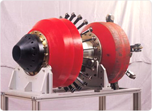
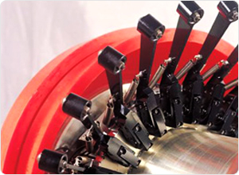
Metal Loss Inspection
Metal Loss Inspection : 측정원리
누설자속의 변화를 측정하여 배관의 두께 변화를 추정하는 방법은 배관 관리 분야에서 널리 이용되고 있는 기술입니다. 자기에 의해 포화된 배관에서 배관의 부식과 같은 metal loss에서 누설되는 누설자속을 측정하여 데이터 분석에 의해 부식 부위의 길이, 폭, 깊이의 형태를 추정하는 원리이며, 한국가스공사는 MFL 기술에 기반하여 고성능의 자기누설피그, 즉 KogasMFL™을 개발하였습니다.
KogasMFL™ The Advanced Metal Loss Detection Tool
한국가스공사의 첫번째 누설자속 검출 장비인 KogasMFL™은 2005년도에 개발되었습니다. 그 이후 한국가스공사 배관에 적용되어 탁월한 성능을 보여주고 있습니다. KogasMFL™은 다양한 형태의 부식, girth weld cracks 및 배관 제조상의 결함들을 검출할 수 있도록 최적화되어 개발되었습니다. 검출된 부식 결함은 그 형태에 따라 general corrosion, axial, circumferential grooving, 및 pitting으로 분류되어 분석이 진행됩니다. KogasMFL™ 의 성능은 아래의 사양에 나타내고 있으며, 또한, 지오메트리 피그와 동일하게 관성항법 장치를 장착하여 배관의 위도, 경도, 고도의 3차원 좌표에 대한 지형학적 정보를 획득할 수 있습니다.
KogasMFL™ 의 기능
- Odometer system : 피그 진행 거리 측정
- Eddy Current System : 결함의 위치 판별(내/외부)
- INS/GPS integration system : 3차원 수치지도 작성
- Data acquisition system : 수집된 자료의 처리 및 저장
- Data analysis:부식결함 형태 추정 알고리즘에 의한 데이터 분석
- line-up : 20”~30”
운전조건
최적 운전 조건은 1 ~ 4 m/s의 유속이며, 기체 상태에서는 2~10 Mpa, 액체 상태에서는 0.5~10 Mpa 범위에서 운영이 가능합니다.
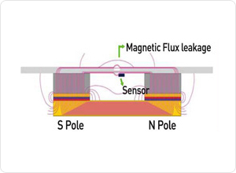
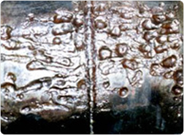
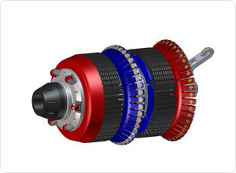
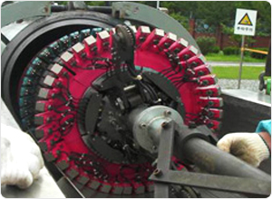
| 장비사양 | |
|---|---|
| Pipeline product | Gas or liquid |
| Mission Length | 200 km |
| Maximum Operating Speed | 6 m/s |
| Optimum Operating Speed | 1-4 m/s |
| Minmum Passable Bend Radius | 1.5D |
| Maximum Operating Pressure | 0-60 ℃ |
| Data memory | 60GB |
| 구분 | Pinhole | Axial Slottin |
Circ. Slotting |
Pitting | Axial Grooving |
Circ. Grooving |
General1 |
|---|---|---|---|---|---|---|---|
| Depth at POD = 90% | detectabl | 10% w.t | 10% w.t | 10% w.t | 10% w.t | 10% w.t | 10% w.t |
| Depth sizing accuracyat 80% confidence |
N/A | N/A | 10% w.t | 10% w.t | 10% w.t | 10% w.t | 10% w.t |
| Width sizing accuracyat 80% confidence |
±10 mm | ±10 mm | ±10 mm | ±10 mm | ±10 mm | ±10 mm | ±10 mm |
| Length sizing accuracyat 80% confidence |
±10 mm | ±10 mm | ±10 mm | ±10 mm | ±10 mm | ±20 mm | ±20 mm |
Digital Mapping
Digital Mapping Technology
한국가스공사에서 개발된 ILI 장비(지오메트리 및 MFL피그)는 관성항법 장치가 장착되어 배관의 3차원 지형학적 정보를 획득할 수 있습니다. 관성항법모듈의 x, y, z 3차원 좌표의 자이로 및 가속도계에 의해서 피그의 방향 및 속도가 측정되며, 항법알고리즘을 통해 지구좌표상의 위도, 경도, 고도에 대한 정보로 변환됩니다. 항법의 정확도를 높이기 위하여 지하의 매설배관을 주행해야하는 피그의 특성상 피깅전 GPS 정보가 알려진 기준점에서 피그가 통과시 GPS 시간 기준의 피그 통과시간을 기록해야 합니다. 이를 위하여 Ground Bench Marker System이 채택되었으며, 피그의 후면에 장착된 전자기파 발신기에서 발생되는 신호를 검출하여 정확한 피그 통과시간을 측정하게 됩니다.
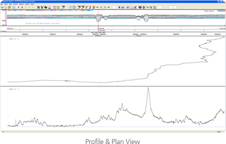
3D View-Cyber Pipeline View
Digital Mapping 기술은 검사를 수행한 배관의 평면도 및 단면도를 생성합니다. 또한, 획득된 3차원 정보가 가상현실 기술 기반의 GUI(Graphic User Interface)에 활용되어 배관 운영의 책임자 또는 피깅 담당자가 마치 실제 배관속을 걸어가는 것과 같이 느낄수 있도록 사용자 친화적인 Mapping 시스템이 구현되었습니다.
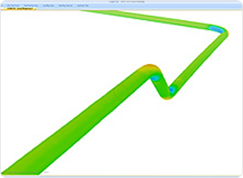
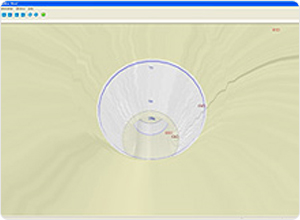
KOGAS Pipeline Simulation Facility
KOGAS Pipeline Simulation Facility (KPSF)
한국가스공사는 개발된 ILI 장비의 캘리브레이션 및 성능 시험을 위하여 KPSF라 불리는 시뮬레이션 설비를 구축하였습니다. 개발된 ILI 장비는 KPSF에서 검증된후 실제 배관에 적용되었습니다. KPSF는 런처 및 리시버 트랩과 물의 순환을 위한 펌프 기반의 power 시스템으로 구성된 운전부와 피그 캘리브레이션을 위한 다양한 결함들 및 곡관부로 구성된 300m 길이의 배관부로 구축되었습니다.
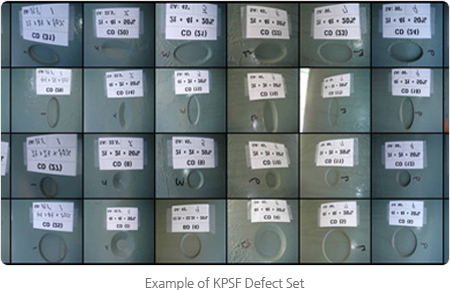
Specification : KOGAS Pipeline Simulation Facility (KPSF)
KPSF는 피그가 30인치 구경의 길이 300m의 배관을 주행할 수 있도록 설계되었으며, 지상 및 지하에 매설되어 있습니다. 또한, Control 결함, Velocity Gradient 결함, Correlation 결함, Helix 결함, Detection Threshold 검출용 결함, 곡관부 결함 및 케이싱 결함등의 다양한 결함이 배관에 구비되어 있어 시스템의 캘리브레이션 및 성능 시험을 수행할 수 있다.
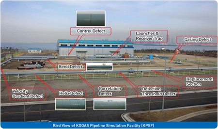